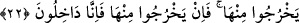

oradaki zorbalardan korktuğunuzdan dolayı arkanıza dönerek kaçmayın. Yani, Allah’ın
emrinin hilafına ökçelerinizin üzerinde geri dönmeyiniz, demektir. “Yoksa kaybederek
dönmüş olursunuz.” Yani dünyâ ve âhiret mükâfâtını elden kaçırarak hüsrâna
uğrayanlar olursunuz.
22- Onlar şu cevabı verdiler: Yâ Mûsâ! Orada zorba bir toplum var; onlar oradan
çıkmadıkça biz oraya aslâ girmeyeceğiz. Eğer oradan çıkarlarsa biz de hemen
gireriz.
“Onlar şu cevâbı verdiler:” İsrâiloğulları Mûsâ (a.s.)’ın emrini ve nehyini
duyduklarında ona uymadan şöyle dediler: “Ey Mûsâ, orada zorba” mukavemete güç
yetirilmeyecek derecede güçlü “bir toplum var.” Zorba kim olursa olsun insanlara
zulmeden ve istediğini zorla yaptıran kişidir.
İsrâiloğulları bu sözleri şu olaydan sonra söylemişlerdir: On iki nakîb (başkan) haber
toplamak için yola çıktılar ve zorbaların şehrine vardılar. Geri dönüp de Mûsâ (a.s.)’a
onlarda müşâhede ettikleri kuvvetlerini, boylarının uzunluğunu ve iri cüsselerini,
İsrâiloğullarından birinin onların iri cüsselerinin yanında ayaklarının dahi altında
kalacağını haber verdiklerinde Mûsâ (a.s.) onlara şöyle dedi: “Onların bu durumunu
gizleyin ve karargâhtan hiç kimseye söylemeyin, yoksa bozulup dağılırlar.” Ama
onlardan her biri, kendi yakınına ve amca çocuklarına bunu haber verdi. Yalnız iki kişi
Mûsâ (a.s.)’ın sözüne sadık kaldılar. Onlardan biri Yûşa b. Nûn b. Efrâîm b. Yusuf
adındaki Mûsâ (a.s.)’ın hizmetçisi, diğeri de yine Mûsâ (a.s.)’ın kızkardeşi Meryem
binti İmran’ın kocası Kâleb b. Yûfennâ idi. Kâleb, Yahûda kolundan idi. Böylece haber,
İsrâiloğulları arasında yayıldı. Bu yüzden onlar “Orada zorba bir millet var.” dediler.
“Onlar oradan çıkmadıkça” biz bir şey yapmadan kendiliklerinden çıkmadıkları
müddetçe “biz oraya aslâ girmeyeceğiz.” Çünkü onları oradan çıkarmak bizim
harcımız (gücümüz dahilinde) değildir. Bizimle ilgili olmayan bir sebepten dolayı
“Eğer oradan çıkarlarsa biz de hemen gireriz.”
23- (Allah’tan) Korkanlardan Allah’ın kendilerine lütufda bulunduğu iki kişi şöyle